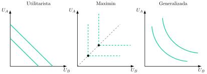
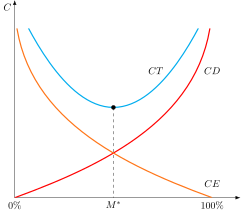
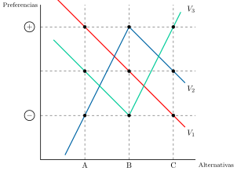
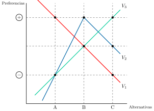
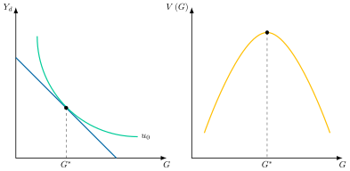
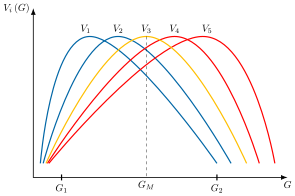
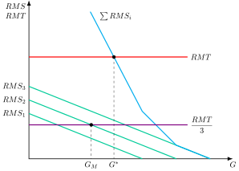
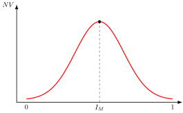

Apuntes para la oposición al Cuerpo de Diplomados Comerciales del Estado
16 Economía del bienestar (III): teoría de la elección colectiva. El teorema de imposibilidad de Arrow. Funciones de bienestar social, reglas de votación y otros desarrollos posteriores.
16.1 Introducción  1'
1'
En el blog "Nada es Gratis", el profesor José Luis Ferreira relató cómo los participantes del 15-M, al organizar sus asambleas, descubrieron por sí mismos los desafíos de la toma de decisiones colectiva. Sin saberlo, se enfrentaban a la misma complejidad que Kenneth Arrow abordó en su trabajo: la aparente sencillez del voto esconde una profunda complejidad.
Así, el Sector Público se enfrenta a un problema central: cómo agregar las diferentes preferencias individuales en una decisión colectiva coherente. El análisis de cómo se realiza esta agregación y de las propiedades de los diferentes mecanismos que la hacen posible se denomina Teoría de la Elección Colectiva. Dentro de este marco, exploraremos los mecanismos de decisión del Sector Público, profundizando en las reglas de votación que traducen los votos en resultados, en la elección directa como un reflejo de la voluntad popular, y en la democracia representativa, que delega el poder de decisión en nuestros representantes.
Por consiguiente, el objetivo de esta exposición será estudiar la Teoría de la Elección Colectiva, es decir, si se puede encontrar una buena regla de Elección Colectiva y cuáles son sus efectos a través del siguiente esquema:
El problema de la Elección Colectiva.
Criterios que debe cumplir la Regla de la Elección Colectiva.
Teorema de Imposibilidad de Arrow.
Elección mediante votación, donde se analizará la democracia directa y la democracia representativa.
16.2 El problema de la Elección Colectiva 2'
Comenzando con el problema de la elección colectiva, es aquel que estudia la cuestión de la toma de decisiones del sector público analizando si es posible formular una regla de elección colectiva que permita agregar las preferencias individuales, respetándolas y cumpliendo unos requisitos de racionalidad y eficiencia.
Así, una regla de elección colectiva es un mecanismo que permite agregar preferencias individuales para conseguir una preferencia social, siendo los más utilizados:
Las reglas de votación, que se basan en la ordenación de preferencias individuales.
Funciones de Bienestar Social, que ponderan la intensidad de preferencias individuales en una función de utilidad.
La función de bienestar social fue planteada inicialmente por Bergson (1938) y Samuelson (1947) y se define como una función \(W\) que asigna un índice de utilidad a un vector de variables, \(\left(Z_{1},Z_{2,}\ldots,Z_{n}\right)\), que pueden afectar al bienestar social: \[W=W\left(Z_{1},Z_{2},\ldots,Z_{n}\right) \tag{16.1}\] donde las variables son índices de utilidad, de modo que la función de bienestar social permite elegir entre óptimos de Pareto. De esta manera, la función de bienestar social asigna un índice de utilidad social a cada vector de índices de utilidad.
La forma de la función de bienestar social –concavidad– reflejará las distintas preferencias sobre la distribución de la renta:
La función de bienestar utilitarista, desarrollada por Bentham y Harsanyi (1955; 1789), queda definida como la suma lineal de utilidades donde se valora socialmente de forma idéntica la valoración de utilidad de cualquier individuo. No se preocupa por la igualdad –aversión a la desigualdad igual a 0 o agentes neutrales ante el riesgo–, siendo las curvas de indiferencia social rectas con pendiente -1.
La función de bienestar social maxi-min, desarrollada por Rawls1 (1971), donde el criterio maximin implica que el bienestar social es igual a la utilidad del individuo con menor utilidad. Según Rawls, cuando los agentes actúan bajo el “velo de la ignorancia”, es decir, desconocen ex ante su lugar en la sociedad, se protegerán frente al peor resultado posible, como si tuvieran una aversión infinita al riesgo, y por eso seguirán esta regla2. Así, las curvas de indiferencia social tendrán forma de L –tipo Leontief– y sus vértices se sitúan en la bisectriz, ya que el bienestar social solo aumenta si mejora la utilidad del individuo peor situado: aumentar la del mejor situado, sin mejorar la del otro, no añade bienestar.
La función de bienestar social de Bernoulli y Nash (1738; 1950), que toma como referencia una especificación tipo Cobb-Douglas, el producto de las utilidades individuales, con curvas de indiferencia social convexas. De esta forma, se pasa de la aversión infinita a la desigualdad de Rawls a una aversión finita. Ahora se está dispuesto a intercambiar pérdidas de utilidad de los más favorecidos a cambio de ganancias de los más desfavorecidos hasta un límite.

Sin embargo, la Función de Bienestar Social plantea limitaciones al realizar comparaciones interpersonales de utilidad y tratarse de un enfoque cardinal3.
Por ello, buena parte de la Teoría de la Elección Colectiva se ha centrado en el análisis de las Reglas de Votación, tanto porque evitan el debate sobre la posibilidad o no de comparar utilidades, como por el hecho de que en las sociedades democráticas las decisiones se toman a través de votación.
16.3 Criterios que debe cumplir la Regla de la Elección Colectiva 1'
En sociedades democráticas y racionales, se espera que las reglas de elección colectiva cumplan unos determinados criterios de coherencia respecto a las preferencias de los individuos. El Premio Nobel Kenneth Arrow (Arrow 1951), estableció 5 propiedades básicas deseables que debería cumplir cualquier Regla de Elección Colectiva:
Dominio no restringido o universalidad (U), es decir, la regla debe estar definida para cualquier combinación de preferencias individuales.
Racionalidad (R), es decir, la preferencia social que genera la regla es transitiva: dadas 3 alternativas, \(A\), \(B\), y \(C\), si \(A\succ B\) y \(B\succ C\), entonces \(A\succ C\). Implica que el resultado de la regla de elección social tiene coherencia lógica, evitando votos cíclicos.
Criterio de Pareto (optimalidad débil, P), es decir, si todos prefieren individualmente una alternativa \(A\) a otra \(B\) entonces socialmente también debe ser así, asegurando la eficiencia4.
Ausencia de Dictador (AD), es decir, no debe existir ningún individuo cuya preferencia estricta entre dos alternativas se convierta siempre en la preferencia social, sean cuales sean las preferencias de los demás. Esto implica que nadie controla la regla de elección colectiva
Independencia de las Alternativas Irrelevantes (IAI), es decir, la elección entre 2 alternativas debe depender solo de las preferencias individuales entre ambas alternativas y no de la posición relativa frente a terceras5. Este axioma impide utilizar información sobre la intensidad de las preferencias, de forma que la regla solo puede basarse en cómo ordena cada individuo las dos alternativas en juego.
16.4 El Teorema de Imposibilidad de Arrow 1'
En base a las anteriores propiedades, el propio Arrow (1950, 1951) planteó el teorema de imposibilidad, afirmando que, si existen al menos 3 alternativas y el número de individuos es finito, no existe ninguna regla de elección colectiva que cumpla simultáneamente los 5 axiomas67.
Por consiguiente, será imposible encontrar una Regla de Elección Colectiva que utilizando información exclusivamente ordinal acerca de las preferencias individuales se ajuste a unos principios mínimos de coherencia y respeto a preferencias individuales8. Por lo tanto, si se utiliza una regla de elección colectiva, se ha de renunciar a alguna de estas condiciones910.
Sin embargo, la posibilidad de renunciar a R,P y AD parece poco aceptable en sociedades democráticas, por lo que la Economía Pública se ha centrado en los sistemas de elección colectiva que renuncian a la U, como la votación mayoritaria, o la IAI, como la función de bienestar social.
16.5 Elección mediante votación 14'
Como se ha mencionado, buena parte de las teorías de Elección Social se basan en las reglas de votación para evitar comparar utilidades y porque, normalmente, se utilizan en sociedades democráticas. A continuación, se analizarán las reglas de democracia directa y democracia representativa.
Democracia Directa
Respecto a la democracia directa –donde las decisiones públicas se adoptan por votación entre los individuos11–, aunque casi no se aplica su estudio es importante ya que:
Revela los problemas inherentes a cualquier mecanismo de votación.
Es aplicable en circunstancias económicas en las que el número de votantes es reducido, por ejemplo, votaciones en un Consejo de Ministros, en un Parlamento o en el seno del consejo directivo de una empresa.
Bajo ciertas condiciones, lleva a las mismas decisiones de provisión pública que la Democracia Representativa12.
En Democracia Directa se parte de suponer una serie de preferencias individuales que tratan de traducirse en decisiones presupuestarias a través de un proceso regido por unas reglas de votación previamente establecidas. Se supone un individuo, un voto, y se analizan los aspectos de las reglas de votación: la distribución de votos y los criterios que determinan la decisión del voto ganador.
A continuación, se analizarán los principales criterios para determinar el voto ganador.
Regla de la Unanimidad
En primer lugar, el economista sueco Knut Wicksell (Wicksell 1896) propone la regla de la unanimidad que exige el acuerdo total de todos los individuos para aprobar una decisión. Wicksell la diseñó para resolver el problema de la financiación de los bienes públicos de forma eficiente.
Ventajas de la Regla
Mejora de Pareto: solo se aprueban las propuestas que benefician al menos a una persona sin perjudicar a nadie, porque cualquier perjudicado podría vetarlas. Si se siguen aprobando propuestas mientras quede alguna mejora posible, se alcanza un óptimo de Pareto.
Financiación consensuada: el coste del bien público se financia con impuestos que todos los individuos aceptan voluntariamente. Por ejemplo, todos los vecinos tendrían que acordar no solo construir una nueva acera, sino también la fórmula exacta para repartir el coste entre ellos.
Desventajas de la Regla Lentitud del Proceso:
La negociación es extremadamente larga y compleja, haciendo que sea muy difícil, e incluso imposible, llegar a un acuerdo.
Comportamientos Estratégicos: La regla puede generar tácticas manipuladoras, especialmente si el poder de negociación no es igual entre las partes:
Tiranía de la minoría (Baumol): Una minoría con poder de veto puede bloquear cualquier propuesta de la mayoría hasta conseguir concesiones que les beneficien de forma desproporcionada. Por ejemplo, una pequeña comunidad que no quiere pagar impuestos para un hospital podría vetar la construcción a menos que el gobierno les ofrezca algo a cambio, como la exención del pago.
Tiranía de la mayoría (Wicksell): La mayoría podría presionar a la minoría para que acepte una propuesta que no les beneficia, amenazando con negarle otros bienes o servicios. Por ejemplo, una mayoría que quiere construir una autopista podría amenazar a una minoría que se opone a ella con dejarla fuera del acceso a otros servicios públicos.
Regla de la mayoría óptima en cada elección
Debido a las limitaciones del criterio de unanimidad, Buchanan y Tullock (1962) plantean una mayoría óptima para cada decisión. Según estos autores, existiría una mayoría óptima en la elección que pondera 2 tipos de costes:
Costes Externos, \(CE\), que se producen cuando la alternativa elegida va en contra de los intereses de los individuos. Por lo tanto, cuanto mayor es el porcentaje de votos requeridos para que una alternativa sea vencedora, menores son los costes externos.
Costes de Decisión, CD, surgen por la paralización de las decisiones hasta que se alcanza una mayoría y, por tanto, son más elevados cuanto mayor es el porcentaje de votos requeridos.
Gráficamente, en un plano de costes y porcentajes de mayoría requerida como el de la Figura 16.2, los \(CE\) serán decrecientes y los \(CD\) serán crecientes. Por lo tanto, los Costes Totales , \(CT\), que serán la suma de ambos, tendrá forma de U. En el mínimo de los \(CT\), \(M^{*}\), se encuentra la mayoría óptima, que no tiene por qué coincidir con el 50% de la población.

Sin embargo, para este criterio también se plantean una serie de problemas prácticos a la hora de fijar la mayoría óptima, ya que se deberá valorar los costes de transacción y, además, la estructura de costes será diferente para cada decisión. Por ello, la regla predominante es la Regla de la Mayoría Simple.
Regla de la Mayoría Simple
La Regla de la Mayoría Simple establece que una alternativa es elegida cuando recibe la mitad más 1 de los votos cuando existan 2 alternativas. Cuenta con grandes ventajas ya que:
Evita largas deliberaciones, por lo que los costes de decisión son muy bajos.
Es de fácil comprensión y goza de gran legitimidad entre las sociedades democráticas.
Por ello, la mayoría simple constituye el mecanismo de referencia para la elección directa. Sin embargo, no está exenta de inconvenientes relacionados con los criterios de Arrow:
No garantiza una provisión eficiente, ya que no revela la intensidad de las preferencias. Esto no significa que incumpla el criterio de Pareto de Arrow, que sí cumple, porque si todos prefieren una alternativa esta gana la votación, sino que el nivel elegido puede no ser un óptimo de Pareto.
Incentiva escasamente a la participación, dado que la posibilidad de que un voto sea decisivo es muy reducida.
Tiene propiedades redistributivas que pueden convertirlo en un instrumento de explotación de la minoría por la mayoría.
Posible incoherencia de resultados, que se explica a través de la paradoja de Condorcet (1785), es decir, ninguna alternativa resulta ganadora a causa de que cada alternativa puede ser batida por otra. Entonces se habla de mayorías cíclicas.
Incoherencia de resultados
Para explicar este último punto, si se plantean una situación en la que existen 3 votantes, \(V_{1}\), \(V_{2}\) y \(V_{3}\), y 3 alternativas sobre niveles de gasto público, \(A\), \(B\), y \(C\), y se establecen las siguientes preferencias: \[\begin{align*} V_{1}: & A\succ B\succ C\\ V_{2}: & B\succ C\succ A\\ V_{3}: & C\succ A\succ B \end{align*}\] votando por pares de alternativas.
Esto se puede observar en un plano de intensidad de preferencias y niveles de gasto público como el de la Figura 16.3.

Para adoptar una decisión social, se compararán las preferencias por pares:
Entre \(A\) y \(B\), se elige la alternativa \(A\), preferida por \(V_{1}\) y \(V_{3}\).
Entre \(B\) y \(C\), se elige la alternativa \(B\), preferida por \(V_{1}\) y \(V_{2}\).
Entre \(A\) y \(C\), se elige la alternativa \(C\), preferida por \(V_{2}\) y \(V_{3}\).
Así, aunque cada votante tiene una ordenación transitiva, la preferencia social resultante es intransitiva (\(A\succ B\), \(B\succ C\) y \(C\succ A\)), por lo que ninguna sale ganadora, violando así el supuesto de racionalidad de Arrow13.
Esto ocurre porque el votante 3, \(V_{3}\), tiene preferencias multimodales (es decir, tiene dos máximos relativos, \(A\) y \(C\), cuando las alternativas se ordenan según el nivel de gasto). La ciclicidad se evita, por ejemplo, cuando todos los individuos tienen preferencias idénticas o cuando todas las preferencias son unimodales. En este caso, en cambio, existe ciclicidad y no se verifica la transitividad social, dando lugar a la paradoja de Condorcet.
Aun así, existen vías para evitar la paradoja como:
Todas las preferencias son idénticas. Sin embargo, en ese caso no sería necesaria una regla de elección colectiva.
Eliminar las alternativas que han sido rechazadas alguna vez. Sin embargo, este método puede resultar en problemas de manipulación de la agenda por parte del seleccionador del orden de votación: el que diseña el orden de votación de las alternativas puede lograr el resultado final que desea, de modo que, en la práctica, actúa como un dictador aunque la regla no sea formalmente dictatorial.
Las preferencias son unimodales (Black), lo que implica renunciar al axioma de universalidad.
Nos vamos a centrar en esta opción. Además, debemos considerar preferencias unidimensionales (es decir, se decide solo sobre una dimensión, por ejemplo, el nivel de gasto). Si son multidimensionales también pueden llevar a ciclos, comparación de preferencias, etc.
En el ejemplo anterior, para hacer las preferencias unimodales, deberíamos modificar las preferencias del individuo 3: \(C\succ B\succ A\), de manera que la alternativa ganadora sería la \(B\), y en el gráfico solo existiría un solo pico –máximo– para cada individuo tal y como se observa en la Figura 16.4.

Pero, ¿hasta qué punto es restrictivo renunciar a la universalidad exigiendo preferencias unimodales? No es demasiado restrictivo exigir la unimodalidad, pues ésta implica que, a medida que un individuo se aleja de su opción preferida, debería estar siempre peor, de manera que las preferencias se modulen y no salten de extremo a extremo.
Así, por ejemplo, si describimos las preferencias de un individuo sobre sanidad pública, parece lógico que, si su opción preferida es mucho gasto público, su siguiente opción preferida sea gasto público medio, y su última opción sea gasto público nulo.
En definitiva, abandonar la condición de universalidad implica un cierto sacrificio (pues la regla deja de funcionar para algunas combinaciones de preferencias individuales), pero este sacrificio se juzga menos importante que el que resulta del incumplimiento de la condición de transitividad (es decir, la no existencia de una solución única).
Teorema del votante mediano de Black (1948)
La principal implicación de imponer unimodalidad es que la elección vendrá determinada por las preferencias del votante mediano, es decir, aquel cuya alternativa preferida se encuentra en la mediana de las alternativas más preferidas14, que en el caso anterior se daría sobre la opción \(B\).
Este hecho se aprecia en una votación sobre niveles de gasto público, como veremos a continuación.
Provisión no eficiente
Se supone que los \(n\) individuos con preferencias unimodales se preocupan únicamente por el nivel de gasto y que tiene las características de bien público, el cual es financiado por impuestos de cuantía alícuota. El nivel de gasto se determina por la regla de votación mayoritaria.
Así, cada consumidor determinará su nivel de gasto público preferido maximizando su utilidad \[\max\quad U\left(Y_{d},G\right) \tag{16.2}\] sujeto a su restricción presupuestaria \[Y_{d}=Y-T\left(Y_{i},G\right) \tag{16.3}\]
Por tanto, tal y como se observa en la Figura 16.5:
Cada consumidor determinará su nivel de gasto público preferido maximizando su utilidad sujeto a su restricción presupuestaria, gráficamente en el punto de tangencia de la curva de indiferencia con la restricción presupuestaria.
El nivel óptimo de gasto vendrá dado por \(G^{*}\).
Por consiguiente, la elección del bien público \(G\) por parte de los agentes, \(V\left(G\right)\), depende de sus gustos, el nivel de renta y los impuestos (precio del bien público G).

Llevando este resultado a una votación, gráficamente en un plano de preferencias y niveles de gasto como el de la Figura 16.6, se suponen 5 individuos y se ordenan los niveles de gastos preferidos por los votantes de mayor a menor, donde el votante mediano será aquel cuyo nivel de gasto preferido, \(G_{M}\), se encuentra en la mediana de la distribución de gastos óptimos.
Si hay dos alternativas de gasto, \(G_{1}\) y \(G_{M}\), votarán por la alternativa \(G_{M}\), tanto el votante mediano como los que están a su derecha, \(V_{4}\) y \(V_{5}\), y algunos de los que están a su izquierda, \(V_{2}\).
Ocurrirá lo mismo para la alternativa de gasto \(G_{2}\).
Dicho de otra manera, el gasto preferido por el votante mediano es el preferido en una votación.

Este es un resultado general de la votación mayoritaria: cuando los individuos tienen preferencias unimodales y se votan alternativas unidimensionales, el resultado de la votación coincidirá con la alternativa preferida por el votante mediano.
Sin embargo, este resultado es válido si las alternativas son unidimensionales, es decir, solo se elige sobre el nivel de gasto, ya que como afirma Kramer (1973) con alternativas multidimensionales volvería a aparecer el problema de la ciclicidad15.
Posible ineficiencia del resultado
No obstante, aun habiendo superado el problema de la ciclicidad, la regla de la mayoría simple no revela la intensidad de las preferencias por lo que no es eficiente en el sentido de Pareto. Esta premisa se va a demostrar con el análisis de la eficiencia, donde el nivel de gasto preferido por el votante mediano no tiene por qué coincidir con el nivel eficiente de gasto.
Gráficamente, en un plano de relaciones marginales de sustitución y transformación, \(RMS\) y \(RMT\), y niveles de provisión de un bien público, \(G\), como el de la Figura 16.7, se van a representar
Las diferentes relaciones marginales de sustitución, que representan las preferencias marginales de los individuos y
La relación marginal de transformación, \(RMT\), que representa el coste marginal de producción, que se va a asumir constante por simplicidad.
La regla de eficiencia de Samuelson (1954) para la provisión de bienes públicos asegura que la suma de relaciones marginales de sustitución de los individuos, \(i\), debe coincidir con la relación marginal de transformación16: \[\sum RMS_{i}=RMT\quad i=1,2,3 \tag{16.4}\]
Sin embargo, el resultado de la votación no es independiente de la financiación del gasto público. Por lo tanto, asumiendo que la financiación del gasto público es a través de un impuesto de capitación, el nivel de impuesto que paga cada individuo, \(\tau_{i}\), será: \[\tau_{i}=\dfrac{G}{3}\cdot RMT \tag{16.5}\] por lo tanto, para un individuo \(i\) el nivel de gasto público \(G\) preferido será aquel que iguale su relación marginal de sustitución al coste marginal que le supone una unidad más de gasto público17, es decir: \[RMS_{i}=\dfrac{\partial\tau_{i}}{\partial G}=\dfrac{RMT}{3} \tag{16.6}\]
Gráficamente, en Figura 16.7, si se representa la suma de la relaciones marginales de sustitución, \(\sum RMS_{i}\), el nivel de gasto óptimo se determinaría en el punto de intersección entre la \(RMT\) y la suma de las \(RMS\), cumpliéndose así la condición de eficiencia de Samuelson. Por lo tanto, el nivel óptimo de gasto público sería \(G^{*}\).

Sin embargo, como se ha visto, a través de la regla de votación cada votante igualaría su \(RMS\) a su parte del coste marginal, es decir, a \(\frac{RMT}{3}\) como habría 3 votantes y el votante 2 es el votante mediano, el nivel de gasto público preferido sería igual al nivel de gasto público preferido por el votante mediano, \(G_{B}\), que sería menor que el gasto eficiente, \(G^{*}\), que era uno de los inconvenientes relacionados con los criterios de Arrow.
La intensidad de preferencias
Esto se debe a que no se considera la intensidad de preferencias, que es la que determina el nivel óptimo de provisión de bien público:
Si los individuos pudieran negociar antes de la votación, la minoría, que tiene preferencias más intensas –y que por lo tanto obtiene mayores ganancias de la provisión del bien público–, podría compensar monetariamente a la mayoría para que votase a favor del nivel eficiente de gasto.
Esto implica relajar IAI, para lo que se plantean dos posibilidades: el intercambio de votos y la regla de Borda.
Intercambio de votos o logrolling
Por un lado, para analizar el método de intercambio de votos se supondrá que existen 2 proyectos, \(A\) y \(B\), y 3 votantes, \(V_{1}\), \(V_{2}\) y \(V_{3}\), suponiendo que el proyecto \(A\) solo beneficia a \(V_{1}\) y el proyecto \(B\) solo beneficia a \(V_{2}\), si los 3 individuos votan para ver si salen o no los proyectos, \(V_{2}\) y \(V_{3}\) votarán en contra del proyecto \(A\) y \(V_{1}\) y \(V_{3}\) votarán en contra del proyecto \(B\). Por lo tanto, no se aceptarían los proyectos.
Sin embargo, si \(V_{1}\) y \(V_{2}\) negocian y se comprometen a intercambiar votos ambos proyectos saldrían adelante, ya que solo \(V_{3}\) votaría en contra de ambos proyectos. No obstante, este método tiene una serie de inconvenientes ya que:
Nada garantiza que se cumpla el acuerdo, a no ser que \(V_{1}\) y \(V_{2}\) presenten ambos proyectos en una única propuesta conjunta, de modo que ninguno pueda votar a favor del suyo y en contra del otro.
Existen elevados costes de negociación.
Este método puede aumentar el gasto público por encima del nivel eficiente.
Si \(V_{3}\) no se ve representado en ningún proyecto, se produce una explotación de la minoría.
Regla de Borda
Por otro lado, la regla de Borda (1781) supone que si existen 4 alternativas, \(A\), \(B\), \(C\) y \(D\), y 3 votantes, \(V_{1}\), \(V_{2}\) y \(V_{3}\), cada votante ordena las alternativas y asigna 4 puntos a la que más prefiere, 3 a la segunda, 2 a la tercera y 1 a la última. Se elige la alternativa que obtenga más puntos en total.
Los inconvenientes de este mecanismo son:
La posibilidad de que se dé un empate.
El resultado es manipulable: un votante puede falsear el orden de las alternativas que no le importan, por ejemplo relegando al último lugar a la principal rival de su opción preferida, para inclinar el resultado a su favor.
Teorema de Gibbard-Satterthwaite
Respecto al último punto, el teorema de Gibbard-Satterthwaite (Gibbard 1973; Satterthwaite 1975) establece que, si existen al menos tres alternativas, no existe ninguna regla de elección colectiva no manipulable o a prueba de estrategia, es decir, en la que declarar las verdaderas preferencias sea una estrategia dominante para cada individuo, que cumpla simultáneamente los criterios de \(U\), \(P\), \(AD\) y \(R\). Dicho de otra manera, con tres o más alternativas, un mecanismo de elección que cumpla R, P y U o es dictatorial o es manipulable18.
En suma, respecto a las reglas de elección colectiva analizadas: la votación mayoritaria es manipulable cuando cumple U, porque puede incumplir R al existir ciclicidad. Si se restringe U, considerando preferencias unimodales sobre una sola dimensión, deja de ser manipulable. En general, todos los mecanismos que se basan en la intensidad de las preferencias incumplen IAI y son manipulables.
Democracia Representativa
Por último, otro criterio de representación social puede ser el de Democracia Representativa, que supone votar sobre decisiones presupuestarias indirectamente a través de los parlamentarios o representantes, reduciendo los costes de negociación y simplificando el proceso. \[\underset{\text{Eligen a los pol{í}ticos}}{\text{Ciudadanos}}\longrightarrow\underset{\text{Eligen los programas}}{\text{Pol{í}ticos} }\longrightarrow\underset{\text{Aplican los programas}}{\text{Bur{ó}cratas o funcionarios}}\]
Para analizar la democracia representativa hay que estudiar el comportamiento de tres tipos de agentes: los políticos, los votantes y los grupos de interés.
Así, la teoría de la “Public Choice” resalta que el proceso de adopción de las decisiones públicas es más complejo de lo planteado por la teoría de la elección colectiva. En él intervienen diferentes tipos de agentes económicos, no solo votantes, sino también políticos, funcionarios, grupos de presión, con objetivos particulares, y debido a la presencia de información asimétrica son capaces de sesgar el proceso de elección colectiva hacia sus intereses.
Políticos
El comportamiento de los políticos se puede analizar mediante el modelo de Downs-Hotelling19. El modelo prevé que los gobiernos llevarán a cabo políticas con rentabilidad electoral y no social, de la misma forma que los partidos políticos en la oposición.
Los supuestos en los que se basa el modelo son los siguientes:
Sistema bipartidista maximizador de votos.
Votantes con preferencias unimodales.
Se vota sobre una variable unidimensional, que es la ideología.
Estos supuestos coinciden con la existencia de un votante mediano, por lo que ganará las elecciones aquel partido cuya ideología coincida con la del votante mediano.
Gráficamente, en un plano de número de votos, \(NV\), y posiciones ideológicas, \(I\), donde 0 es la posición de extrema izquierda y 1 la de extrema derecha como el de la Figura 16.8, se representa cómo se distribuyen los votantes según su posición ideológica (función de densidad), observándose que los partidos tenderán a aproximar su ideología a la del votante mediano, \(I_{M}\), que será la que dé la victoria en las elecciones.

No obstante, el modelo Downs-Hotelling suscita una serie de limitaciones20:
La votación se realiza sobre una variable unidimensional, la ideología, cuando en la realidad esto no ocurre ya que se suele votar sobre variables multidimensionales21.
Pueden existir partidos cuyo objeto no sea la maximización de votos.
No todos los posibles votantes se comportan de la misma manera –por ejemplo, abstención–, es decir, el votante mediano efectivo puede diferir del teórico.
Las preferencias pueden no ser unimodales.
Con respecto al último punto, en el caso de que las preferencias fueran bimodales se daría que:
Las preferencias de los electores se polarizarían en 2 o más campos.
Los partidos tendrían posiciones muy diferenciadas.
La democracia sería mucho más inestable y un cambio de Gobierno podría desembocar en una crisis social.
Se podría desembocar en un sistema multipartidos cuando las preferencias sean multimodales.
Entonces, la estabilidad de los gobiernos no depende, por tanto, del número de partidos, sino de las preferencias de los votantes.
Votantes
Respecto a la actuación de los votantes, este modelo estudia también el fenómeno de la decisión de voto, acentuando la influencia provocada por el conocimiento imperfecto y la información costosa. Dado que los agentes son racionales, decidirán si votan, y cuánta información recaban, comparando el beneficio esperado de su voto con su coste.
Ese beneficio esperado depende de lo que gana el votante si vence su opción y de la probabilidad de que su voto sea decisivo. El hecho de que la poca posibilidad de que un voto sea decisivo y la no divisibilidad de los beneficios, hace que no exista estímulo para lograr una buena información. Este escaso estímulo para informarse es la llamada ignorancia racional del votante.
Por consiguiente, la participación electoral aumenta si:
La probabilidad de vencer tiende a igualarse.
Cuanto más diverjan los programas, ya que aumentará el ratio de beneficios/costes.
Los individuos con un mayor nivel de renta y educación tendrán más incentivos a votar, dado que disminuirán los costes y aumentarán los beneficios derivados del voto.
Por otro lado, la Teoría del Ciclo Político considera que los votantes valoran las actuaciones recientes del Gobierno –como aumentos del gasto público o bajadas de impuestos– a la hora de decidir el sentido de su voto. Esto supone que existiría cierta miopía o comportamiento no plenamente racional, lo que, además contribuiría a explicar los ciclos económicos (por las expansiones del gasto asociadas a la proximidad de las elecciones).
Grupos de interés
Los grupos de interés son asociaciones de individuos que se unen con un objetivo común: influir en las decisiones públicas para que les sean favorables. Un ejemplo clásico son los sindicatos, que buscan mejorar las condiciones laborales para sus afiliados y no afiliados.
Para lograr sus metas, estos grupos utilizan diversos instrumentos de manera simultánea:
Intercambio de favores: Pueden intercambiar votos por programas políticos o financiar campañas a cambio de favores.
Influencia directa: Buscan mejorar la información que llega a los legisladores, burócratas y público para posicionar su causa.
Los efectos económicos de la actividad de estos grupos dependen de sus objetivos. Generalmente, los más activos y poderosos no son altruistas, sino aquellos con intereses económicos privados. Sus acciones, a menudo, perjudican el bienestar general de la sociedad.
La teoría de los grupos de interés de Mancur Olson
El economista Mancur Olson (1965) analizó los grupos de interés desde la perspectiva de los bienes públicos. Para él, la actividad de un grupo de interés tiene carácter de bien público para todos los que comparten ese interés, ya que si el grupo logra promover su causa, todos se benefician, independientemente de si contribuyeron o no:
El problema del free-rider: La afiliación a un grupo de interés tiene un coste (tiempo, dinero, etc.), pero el beneficio es gratuito para quienes no se afilian. Esto crea un incentivo para que los individuos se conviertan en {ü}suarios gratuitos" (free-riders).
Grupos grandes vs. grupos pequeños: la tendencia a ser free-rider es mayor en los grupos grandes, porque la aportación de cada miembro apenas cambia el resultado y los costes de organización son altos, y también en los que defienden a las rentas bajas, que soportan peor el coste de participar. En cambio, los grupos pequeños y de rentas elevadas están mejor organizados y son más efectivos. A estos se les conoce como Grupos de Interés Directamente Influyentes, y Olson denomina “privilegiados” a los grupos pequeños y “latentes” a los grandes.
El triángulo de hierro y los buscadores de rentas
Un concepto relacionado es el "triángulo de hierro", una alianza entre políticos, burócratas y grupos de presión que actúan como "buscadores de rentas". Su objetivo es obtener beneficios económicos no a través de la producción, sino a través de la manipulación del entorno político y regulatorio. Esta dinámica perjudica a los votantes (que representan el interés general) porque:
Son menos numerosos que los votantes y, por lo tanto, tienen una mayor posibilidad de organizarse y ejercer presión para la asignación de Gasto Público en su beneficio.
Los votantes, al ser un grupo tan numeroso, enfrentan el problema de la acción colectiva, haciendo que su organización para contrarrestar la influencia de los buscadores de rentas sea extremadamente difícil.
Ampliaciones y otras teorías
A su vez, existen ampliaciones que estudian fenómenos como:
Voto útil y comportamiento estratégico: la teoría original supone que los votantes eligen a su candidato preferido. Sin embargo, en la realidad, el voto útil ocurre cuando un votante prefiere a un candidato pero vota por otro que tiene más probabilidades de ganar. Esto puede hacer que el resultado final se desvíe del punto del votante mediano.
La abstención, el modelo del votante mediano supone que todos los individuos participan, pero la abstención rompe esa premisa. Al estudiar la abstención, se reconoce que el votante mediano del total de la población puede ser diferente al votante mediano de quienes realmente votan. Por ejemplo, si los votantes más extremos (los de los polos ideológicos) están más motivados para participar, el resultado final de la elección se alejará del centro político, contradiciendo la predicción del teorema.
Los objetivos privados de los políticos, los políticos no siempre se mueven por la voluntad popular. Muchos modelos incluyen los objetivos personales de los políticos (como la reelección, el poder o la búsqueda de rentas) como un factor clave que moldea las políticas públicas.
La votación probabilística, donde la existencia de incertidumbre dentro del proceso de decisión electoral –donde los votantes no podrán estimar con exactitud la situación de los candidatos en el espacio político– hace necesaria la incorporación explícita de este factor en el modelo del votante. Por un lado, los individuos en el momento de votar, no conocen el grado de realización de las promesas electorales del candidato en el caso de que llegue al poder. Por lo tanto, existe un grado de aleatoriedad derivado del desfase temporal entre la celebración de las elecciones y la aplicación de políticas por el partido ganador.
Voto significativo, se refiere a la capacidad de un votante para influir en el resultado final. En un sistema de votación mayoritaria, un voto tiene un peso significativo si puede romper un empate o cambiar la victoria de un candidato a otro. Esta es una variable que los votantes racionales consideran.
La relación entre el nivel de renta y las preferencias políticas. Por ejemplo, los votantes de bajos ingresos suelen favorecer políticas de redistribución de la riqueza o mayor gasto social, mientras que los votantes de altos ingresos tienden a preferir recortes de impuestos y menor intervención del Estado.
Ventana de Overton. La ventana de Overton encaja en estas teorías al explicar cómo las reglas de votación y los mecanismos de elección se ven afectados por la percepción pública. Esta ventana representa el rango de ideas políticas aceptables para el público en un momento dado, desde lo “impensable” hasta la “política vigente”. En las democracias, las reglas de votación no operan en un vacío; los candidatos y grupos de interés manipulan la ventana de Overton para que sus propuestas se consideren aceptables por la mayoría. Así, por muy bien diseñado que esté un mecanismo de decisión, el resultado final siempre estará influenciado por lo que la sociedad considera posible, desplazando el debate y el voto hacia un conjunto limitado de opciones.
16.6 Conclusiones  1'
1'
Como conclusión, el Sector Público se enfrenta a un desafío inherente: nunca dispone de toda la información necesaria para agregar perfectamente las preferencias de la ciudadanía. Esta limitación fundamental puede llevar a fallos del sector público, resultando en un aumento del gasto o del tamaño del Estado por encima de un nivel eficiente.
Por ello, las sociedades no buscan un mecanismo de decisión perfecto, sino que recurren a Reglas de Elección Colectiva sencillas. Estas reglas, si bien son imperfectas, se complementan con límites constitucionales que actúan como contrapesos para proteger a la sociedad de los riesgos de la ineficiencia y de las tiranías de la mayoría o la minoría.
Apéndice
16.A.1. El modelo de Salop como extensión de Downs-Hotelling: más de dos partidos
El modelo de Downs-Hotelling desarrollado en el cuerpo del tema explica la convergencia de los partidos hacia el votante mediano bajo un supuesto muy concreto: un sistema bipartidista. Esta restricción no es solo una simplificación cómoda, sino una condición necesaria para que el resultado se sostenga. Osborne (1995) recoge la prueba formal de que, cuando hay tres o más partidos compitiendo sobre la misma línea ideológica, el modelo generalmente no tiene equilibrio de Nash en estrategias puras: para casi cualquier distribución de las preferencias de los votantes, no existe ninguna configuración de posiciones en la que ningún partido tenga incentivo a desplazarse. La intuición es que, con dos partidos, cada uno se enfrenta al otro desde ambos lados de la línea, lo que empuja a los dos hacia el centro. Con tres o más partidos, en cambio, siempre queda al menos uno situado entre otros dos que puede mejorar su resultado desplazándose ligeramente, lo que rompe cualquier posición de equilibrio antes de que llegue a estabilizarse. El propio Osborne concluye que extender directamente el modelo lineal a más de dos partidos aporta poca capacidad explicativa sobre lo que ocurre realmente en sistemas multipartidistas.
El problema no es exclusivo de la política. Salop (1979) se había encontrado con una dificultad estructuralmente idéntica en la competencia monopolística: en el modelo de Hotelling, las empresas situadas en los extremos de la línea disfrutan de una ventaja artificial —solo compiten por un lado—, lo que distorsiona el análisis de la entrada de nuevas empresas. Su solución fue sustituir la línea por una circunferencia: al no haber extremos, todas las posiciones del espacio son simétricas entre sí, y el número de empresas que pueden coexistir en equilibrio depende únicamente de la relación entre el coste fijo de entrada y el coste de “desplazamiento” que asumen los consumidores para llegar hasta la empresa más cercana en el círculo.
Peeters, Saran y Yüksel (2016) trasladan esta misma solución geométrica a la competencia electoral. En su modelo, el espacio ideológico ya no es un segmento con dos extremos, sino una circunferencia unitaria sobre la que se distribuyen tanto los votantes como las posibles posiciones de los partidos. Sobre este espacio, los autores caracterizan los equilibrios de Nash en estrategia pura bajo dos supuestos de comportamiento del votante: votación sincera (cada votante apoya siempre al partido ideológicamente más cercano) y votación estratégica (el votante puede apoyar a un partido distinto de su preferido si así evita que gane el que menos le convence). En ambos casos exigen además que el equilibrio sea “a prueba de deserción”: ningún subgrupo de partidos debe tener incentivo a reorganizarse conjuntamente abandonando sus posiciones actuales.
Sus resultados muestran que, bajo votación sincera, estos equilibrios sostienen configuraciones de dos o tres partidos efectivos, mientras que bajo votación estratégica solo se sostienen una o dos. Este resultado es parcialmente consistente con la Ley de Duverger (1951), que predice una tendencia al bipartidismo bajo la regla de pluralidad, pero va más allá: identifica con precisión en qué condiciones puede sobrevivir en equilibrio un tercer partido, algo que la representación lineal de Downs-Hotelling no permite explicar por la propia inexistencia de equilibrio que demuestra Osborne.
La circunferencia no es, por tanto, un simple giro geométrico sobre el modelo original, sino la vía formal que permite responder a una pregunta que el modelo lineal deja sin resolver: cómo pueden coexistir de forma estable más de dos partidos cuando los votantes mantienen preferencias unimodales sobre el espacio ideológico.
16.A.2. La paradoja liberal de Amartya Sen
Es imposible ser liberal y paretiano a la vez: no es posible respetar mínimamente la libertad de los individuos y al mismo tiempo alcanzar la optimalidad paretiana.
La paradoja del liberal paretiano, paradoja liberal o paradoja de imposibilidad de Sen es un resultado de imposibilidad propuesto por Amartya Sen (1970), en la línea del teorema de Arrow. Afirma que, si la regla de elección social admite cualquier combinación de preferencias individuales, es imposible respetar a la vez el criterio del óptimo de Pareto y un principio de “libertad mínima”, según el cual al menos dos individuos deben ser decisivos sobre algún asunto de su esfera personal, de modo que su preferencia entre esas dos alternativas se convierta en la preferencia social22.
El aspecto más polémico es, por un lado, la contradicción con la noción del liberalismo económico, de que el mecanismo del mercado es suficiente para producir un óptimo de Pareto y por otro, la sugerencia que la capacidad de elección y libertad deben ser el rasgo definitorio de ese mecanismo de mercado, en lugar del criterio de bienestar económico de la economía del bienestar.
La paradoja liberal cuestiona un axioma concreto de Arrow —la optimalidad paretiana débil— frente a la libertad individual, pero mantiene intacto el marco informativo del welfarismo: sigue evaluando el bienestar social únicamente a partir de niveles de utilidad. Sen (1979) fue más allá y cuestionó ese propio marco: ¿es la utilidad, entendida como satisfacción subjetiva de preferencias, el espacio informativo adecuado para juzgar el bienestar de una persona? Su respuesta fue sustituir la utilidad por los funcionamientos, los distintos “seres y haceres” que una persona logra efectivamente alcanzar, desde funcionamientos elementales como estar bien nutrido hasta otros más complejos como participar en la vida de la comunidad. Dos individuos con la misma cesta de bienes pueden lograr funcionamientos muy distintos si uno de ellos padece, por ejemplo, una enfermedad que le impide aprovecharlos con normalidad.
El conjunto de capacidad de una persona es el conjunto de todas las combinaciones de funcionamientos que le resulta factible alcanzar dada su dotación de bienes y sus circunstancias. Mide, por tanto, no lo que la persona efectivamente hace o es, sino la libertad real de la que dispone para elegir entre distintas formas de vida valiosas —una distinción que separa el enfoque de Sen tanto del welfarismo, que solo mira el resultado final, como de la disponibilidad de bienes primarios de Rawls (1971), que no tiene en cuenta que distintos individuos convierten los mismos recursos en funcionamientos con distinta eficacia—. Esta idea tuvo una consecuencia práctica de primer orden: si lo relevante no es la renta ni la utilidad, sino la capacidad real de alcanzar funcionamientos valiosos, los índices de bienestar deben construirse sobre indicadores multidimensionales —salud, educación, participación política— y no sobre una única variable monetaria agregada, como hace el Índice de Desarrollo Humano del Programa de las Naciones Unidas para el Desarrollo, elaborado desde 1990 con la colaboración directa de Sen.
16.A.3. Análisis coste-beneficio
El análisis coste-beneficio (ACB) es una técnica de asignación de recursos con un recorrido mucho más largo de lo que su uso extendido en la segunda mitad del siglo XX podría sugerir. Su origen teórico se remonta al ingeniero francés Dupuit (1844), que ya proponía valorar una obra pública sumando la disposición a pagar de sus usuarios. Esta idea se trasladó pronto a la práctica administrativa: en Estados Unidos, la Rivers and Harbors Act de 1902 exigió justificar los proyectos del Cuerpo de Ingenieros del Ejército por sus beneficios, y la Flood Control Act de 1936 formalizó el criterio de aprobar un proyecto siempre que sus beneficios, recayeran sobre quien recayeran, superasen los costes estimados. El aparato teórico que sostiene esta regla se consolidó poco después con el criterio de compensación de Kaldor (1939) y Hicks (1939), que es precisamente el que fundamenta el ACB tal y como se describe más abajo. Toda esta tradición, con más de 120 años de recorrido a esas alturas, quedó recogida en la gran revisión clásica del campo, Prest y Turvey (1965), que sistematizó sus fundamentos y sus principales problemas prácticos justo antes de que el ACB se generalizara como herramienta habitual de evaluación de políticas públicas.
El ACB parte de la existencia de diferencias entre los costes/beneficios privados y los sociales. Esta discrepancia lleva a que la asignación privada de los recursos, basada en la maximización de beneficios particulares, no sea óptima.
Así, la función del ACB es la de considerar todos los costes y beneficios, privados y públicos, derivados de la provisión de un bien o servicio.
El ACB, tal y como está planteado, tiene su base en el criterio de compensación de Kaldor-Hicks: al decidir sobre la conveniencia de un proyecto, se analiza el valor presente de beneficios y costes sociales, de manera que se aceptará el proyecto si los beneficios son mayores que los costes, aunque no recaigan sobre las mismas personas.
El ACB es especialmente útil para la asignación de recursos públicos, dado que a menudo los bienes y servicios ofrecidos por este sector tienen externalidades importantes.
El problema más grave del ACB proviene de la Teoría del second best. Supongamos una economía de mercado, con unos precios que no reflejan todos los costes y beneficios, pero que son los que emplean los agentes. Si el sector público utiliza precios sombra representativos de dichos costes y beneficios, nos habremos acercado en un sector (el público) al óptimo paretiano, pero, según Lipsey y Lancaster (1956), un movimiento en dirección al óptimo dejando aún imperfecciones en otros sectores, no implica necesariamente una mejor situación que la de partida, e incluso puede empeorarla.
16.A.4. La tiranía de la mayoría y la tiranía de la minoría: el diseño de las reglas de votación
Como se ha visto al analizar la regla de la unanimidad, tanto la tiranía de la mayoría —atribuida a Wicksell— como la tiranía de la minoría —atribuida a Baumol— son riesgos inherentes a cualquier regla de decisión colectiva. Buchanan y Tullock (1962) formalizan este dilema en su cálculo del consentimiento: a medida que aumenta la mayoría exigida para aprobar una decisión, disminuyen los costes externos, el riesgo de que una mayoría imponga su voluntad a una minoría, pero aumentan los costes de decisión, el tiempo y los recursos necesarios para alcanzar el acuerdo, y el riesgo de que una minoría bloquee la decisión. La regla óptima, ya vista anteriormente, es la que minimiza la suma de ambos costes, y no tiene por qué ser la misma para todas las decisiones.
Las democracias constitucionales aplican precisamente este cálculo, calibrando el umbral de mayoría según la gravedad de la decisión que ha de aprobarse. En España, el artículo 167 de la Constitución exige una mayoría de tres quintos en cada Cámara para una reforma constitucional ordinaria, ampliable a dos tercios del Congreso si no hay acuerdo inicial. El artículo 168, en cambio, exige dos tercios en ambas Cámaras, disolución de las Cortes, nuevas elecciones y ratificación por dos tercios de las Cámaras resultantes, además de referéndum obligatorio, para reformar el Título Preliminar o los derechos fundamentales. El umbral crece con la irreversibilidad de la decisión y con el riesgo de tiranía de la mayoría que supondría adoptarla con una mayoría simple.
El riesgo simétrico, la tiranía de la minoría, aparece cuando ese mismo umbral elevado se convierte en poder de veto. En el Consejo de la Unión Europea, una minoría de bloqueo formada por al menos cuatro Estados miembros que representen más del 35% de la población de la Unión puede impedir la aprobación de una decisión por mayoría cualificada, aunque el resto de Estados esté de acuerdo. La misma regla que protege a las minorías de una imposición mayoritaria es, al mismo tiempo, la que les permite paralizar la voluntad de la mayoría.
16.A.6. El mecanismo de Vickrey-Clarke-Groves y la revelación de preferencias
Wicksell, como se ha visto en el cuerpo del tema, propuso la regla de la unanimidad para que nadie tuviera que financiar un bien público que no valora, pero esa misma regla invita a ocultar la propia valoración para pagar menos o arrancar concesiones. La teoría del diseño de mecanismos ofrece una solución distinta al mismo problema: en vez de exigir el acuerdo de todos, diseña las reglas del juego de forma que decir la verdad sea la mejor estrategia de cada individuo, sin necesidad de que este conozca ni confíe en el comportamiento de los demás.
El ejemplo más sencillo es la subasta de Vickrey (1961): una subasta a sobre cerrado en la que cada postor presenta su oferta sin conocer las de los demás, gana quien puja más alto, pero paga el importe de la segunda oferta más alta. Si \(v_{1}\) es la verdadera valoración del postor 1 y \(r_{2}\) la oferta declarada por su rival, la ganancia del postor 1 si gana es \(v_{1}-r_{2}\), una cantidad que no depende de lo que él mismo declare mientras siga ganando: declarar su valoración real es, por tanto, una estrategia dominante, sin ningún incentivo a mentir.
El mecanismo de Vickrey-Clarke-Groves (VCG) traslada esta misma idea a la provisión de un bien público. Cada individuo \(i\) declara su valoración \(r_{i}\left(x\right)\) de cada nivel \(x\) del bien público, y se elige el nivel que maximiza la suma de las valoraciones declaradas. Para que declarar la verdad siga siendo la estrategia dominante de cada individuo, el mecanismo le cobra un impuesto —el llamado impuesto de Clarke— igual a la diferencia entre el bienestar máximo que alcanzarían los demás si ese individuo no participase y el bienestar que efectivamente alcanzan con su participación: solo pagan, por tanto, los individuos cuya presencia cambia realmente el resultado. El mecanismo VCG selecciona siempre el nivel eficiente del bien público y hace que decir la verdad sea una estrategia dominante para cada individuo, pero no está exento de limitaciones: en general genera un superávit presupuestario que no puede devolverse a los individuos sin alterar sus incentivos, por lo que la asignación final no es eficiente en el sentido de Pareto, no es inmune a la colusión entre varios de ellos, y exige revelar la valoración completa de cada alternativa posible, algo que puede resultar inabordable en problemas de gran escala.
16.A.8. La ventana de Overton: cómo cambia lo políticamente posible
Los modelos de elección colectiva vistos en este Apéndice y en el cuerpo del tema —votante mediano, funciones de bienestar social, mecanismos de revelación de preferencias— comparten un supuesto que rara vez se cuestiona: el espacio de alternativas sobre el que se vota está dado de antemano. Sin embargo, ese espacio no es fijo, sino que se desplaza con el tiempo. El marco de la ventana de Overton, formulado por Joseph Overton y desarrollado tras su muerte por Russell (2006), describe precisamente ese fenómeno: el rango de políticas que una sociedad considera aceptables en un momento dado, desde lo impensable hasta la política vigente, y cómo ese rango se desplaza a lo largo del tiempo hasta que una opción antes marginal termina aprobada por mayoría. Cinco episodios históricos ilustran cómo ha operado este desplazamiento.
La abolición de la esclavitud
A comienzos del siglo XIX, abolir la esclavitud era una posición radical incluso en los círculos más progresistas. William Lloyd Garrison fundó en 1833 la American Anti-Slavery Society, y en las décadas siguientes campañas como la suya fueron desplazando la opinión pública del norte de Estados Unidos, de la tolerancia hacia el rechazo moral de la esclavitud, hasta que la abolición pasó de ser una posición marginal a convertirse en política aprobada en un país tras otro (Drescher 2009).
El sufragio femenino
A mediados del siglo XIX, conceder el voto a las mujeres era una propuesta marginal incluso entre los círculos reformistas más avanzados de su tiempo. El desplazamiento hacia su aceptación no siguió un único camino: Nueva Zelanda se convirtió en 1893 en el primer país autogobernado del mundo en reconocer el voto femenino, tres décadas antes que la mayoría de las democracias occidentales. En el Reino Unido, la Women’s Social and Political Union de Emmeline Pankhurst, fundada en 1903, optó por la confrontación directa —manifestaciones, rotura de escaparates, huelgas de hambre en prisión—, hasta el punto de que Emily Davison murió en 1913 al lanzarse al paso del caballo del rey durante el Derby de Epsom (Purvis 2002). En Estados Unidos, en cambio, Carrie Chapman Catt condujo desde 1916 el llamado Winning Plan, una estrategia institucional de coordinación estado por estado y presión legislativa sostenida sobre el Congreso (Baker 2002). Confrontación y negociación institucional operaron así como dos estrategias distintas hacia el mismo desplazamiento, que se generalizó en la mayoría de las democracias occidentales en las primeras décadas del siglo XX.
Los derechos de los trabajadores
Durante buena parte del siglo XIX, la protección laboral —jornadas máximas, edad mínima de acceso al empleo, condiciones de seguridad— no formaba parte del debate político: el trabajo infantil en fábricas y minas se aceptaba como un hecho normal de la vida económica. La Revolución Industrial expuso estas condiciones y dio inicio a una campaña de reforma que tardó décadas en traducirse en ley: en Estados Unidos, dos intentos de prohibición federal del trabajo infantil (1916 y 1919) fueron anulados por el Tribunal Supremo, y no fue hasta la Fair Labor Standards Act de 1938 —ya con el país sumido en la Gran Depresión— cuando la protección laboral moderna, incluida esa prohibición, se consolidó como política vigente (Schmidt 2010).
El matrimonio igualitario
A finales del siglo XX, el reconocimiento legal de las parejas del mismo sexo era una posición marginal incluso en las democracias más consolidadas. España es un ejemplo especialmente claro de lo rápido que puede desplazarse la ventana: una encuesta de junio de 2004 ya mostraba un 66% de apoyo social al matrimonio igualitario, un año antes de que la Ley 13/2005 convirtiera al país en el tercero del mundo en reconocerlo, con una votación parlamentaria de 187 votos a favor. El proceso se repitió, con ritmos distintos, en buena parte de Europa durante la misma década (Calvo 2010).
La revolución keynesiana
El desplazamiento no afecta solo a los derechos civiles, también a las propias ideas económicas que sustentan la política pública. Antes de la Gran Depresión, la intervención estatal en la economía se consideraba peligrosa bajo el consenso de laissez-faire dominante. Tras 1929, la obra de Keynes desplazó ese consenso: la intervención estatal pasó de ser vista como una amenaza a convertirse en la herramienta estabilizadora estándar de la política económica occidental hasta bien entrados los años setenta (Hall 1989).
En los cinco casos, el mecanismo de elección colectiva en sí —votación por mayoría, representación parlamentaria— no cambió: lo que cambió fue el conjunto de alternativas que ese mecanismo consideraba elegibles. Esto recuerda que, por muy bien diseñada que esté una regla de decisión colectiva, su resultado depende siempre de un espacio de alternativas que la propia sociedad redefine con el tiempo.
Términos del glosario de este tema
34 términos · ver el glosario completo
Bibliografía
Rawls heredó las ideas de Rousseau, Hobbes y Locke sobre el contrato social↩︎
Concretamente, Rawls indica que los individuos de la sociedad llegarían a un acuerdo social unánime basado en tres principios:
Principio de libertad, cada persona tiene derecho a la máxima libertad compatible con la libertad de los demás.
Principio de diferencia, las desigualdades económicas y sociales solo son legítimas si derivan del esfuerzo realizado en condiciones de igualdad de oportunidades y, además, benefician a los más desfavorecidos.
Prioridad entre principios, el principio de libertad prima sobre el de diferencia y, dentro de este, la igualdad de oportunidades prima sobre el beneficio de los más desfavorecidos.
La Función de Bienestar Social exige poder realizar comparaciones interpersonales de utilidad de carácter cardinal ya que, por definición, comparar entre dos óptimos globales implicará el incremento de la utilidad de un agente y la reducción de la del otro. Para decidir la superioridad hace falta conocer la intensidad de estos incrementos en \(u\left(x\right)\) y compararlos entre los agentes. Esto choca con la teoría de la utilidad, que ha rechazado casi unánimemente las funciones de utilidad cardinal y el empleo de comparaciones interpersonales de utilidad. A pesar de esto, si se quieren tener en cuenta los trade-offs entre agentes, es necesario hacer comparaciones cardinales.↩︎
Si se exigiera Pareto optimalidad fuerte, entonces para que la alternativa \(A\) fuese preferida a la \(B\) no haría falta que todos los individuos la prefiriesen, sino que bastaría con que un individuo la prefiriese y otros estuviesen indiferentes.↩︎
Por ejemplo, si la elección es entre gasto en sanidad y en educación, el resultado debe ser independiente de cómo valoren los individuos la sanidad y la educación en relación a un tercer bien (como, por ejemplo, la justicia).↩︎
Como no existe ninguna regla que cumpla todos los axiomas, hay que conformarse con reglas que renuncien a alguno de ellos.↩︎
Lo que el Teorema de la imposibilidad de Arrow nos dice es que las reglas de votación no son un buen mecanismo de decisión, ya que todas ellas deben renunciar a alguna de las 5 propiedades mencionadas, y todas ellas se consideran propiedades básicas y deseables. Así, según Arrow, ningún sistema de votación es justo.↩︎
Sin embargo, hubo autores de la Economía del Bienestar que criticaron la teoría de Arrow:
Little criticó que la regla de elección colectiva de Arrow simplemente actúe como una máquina que agrega valores y permite alcanzar una solución, pero que esta solución no representaría necesariamente los valores de la sociedad.
Bergson, por su parte, introdujo una distinción entre aconsejar a un individuo y aconsejar a un funcionario. El objetivo real de la Economía del bienestar, dirá Bergson, es el primero, mientras que la regla de elección colectiva de Arrow indicaría al funcionario lo que debe de hacer.
Por su parte, una Función de Bienestar Social, como mecanismo de elección colectiva, si es individualista y anónima, cumple las condiciones U, AD, P y R del Teorema de Arrow. Sin embargo, al depender de los niveles de utilidad de los individuos –de la intensidad de sus preferencias– incumple la condición IAI.↩︎
Por tanto, existe un “precio” por emplear una regla de elección colectiva, que implicará renunciar a alguna de las condiciones (ningún sistema de votos es justo). Como ha señalado Winston Churchill: “la democracia es el menos malo de todos los sistemas”↩︎
Este sería el caso, por ejemplo, si se realizara un referéndum en un país sobre alguna cuestión pública.↩︎
La relación entre las elecciones en una democracia directa y en una representativa depende del comportamiento de los votantes y de los políticos, e incluso de la estructura del proceso de toma de decisiones dentro del Sector Público.↩︎
La intransitividad implica que no existe ningún equilibrio en votación mayoritaria ya que el proceso de votación se extendería indefinidamente sin que se alcanzara una decisión. Así, se vota entre \(A\) y \(B\), se elegiría \(A\) y el individuo 3 pediría que se votase entre \(C\) y \(A\); entre estas dos alternativas saldría elegida la alternativa \(C\) y el votante 2 pediría que se votase entre \(C\) y \(B\), siendo elegida la alternativa \(B\), a continuación el votante 1 demandaría una votación entre \(A\) y \(B\). De esta forma se volvería al punto de partida y la votación se repetiría de forma indefinida.↩︎
El votante mediano y el medio coinciden si la distribución de las preferencias de los votantes es simétrica. En este tipo de distribución, la media (votante medio) y la mediana (votante mediano) se encuentran en el mismo punto, en el centro de la curva de preferencias.↩︎
Esto es, exceptuando situaciones triviales en las que existe unanimidad, los ciclos son una realidad inherente a cualquier proceso de votación multidimensional. El modelo de votación, entonces, solo producirá resultados definidos y predecibles con alternativas unidimensionales.↩︎
Por definición, la \(RMT\) entre un bien y la renta es igual al coste marginal de producción de este bien.↩︎
El nivel de gasto más preferido por un individuo será aquel para el que se iguale el beneficio marginal de la última unidad provista al coste (fiscal) marginal que tiene esa unidad para él.↩︎
Una regla de elección colectiva es no manipulable –o a prueba de estrategias– si ningún individuo puede conseguir un resultado mejor para él declarando unas preferencias falsas. Toda regla no manipulable cumple la propiedad de Asociación Positiva (AP), que establece que si la regla de elección colectiva elige determinada alternativa \(x_{i}\) y las preferencias de un individuo cambian de tal forma que \(x_{i}\) mejora en su escala de valoración, si la ordenación relativa del resto de alternativas no varía, entonces la regla de elección debe seguir siendo \(x_{i}\). En otras palabras, si una persona pasa a valorar más una alternativa previamente escogida no debe cambiar la elección colectiva. Formalmente, si hay 3 alternativas y para el individuo \(j\) \(x_{1}\succ x_{2}\succ x_{3}\), y la elección colectiva es \(x_{2}\), si las preferencias de \(j\) pasan a ser \(x_{2}\succ x_{1}\succ x_{3}\), la elección colectiva debe seguir siendo \(x_{2}\).↩︎
Fue elaborado por Downs (1957), pero se le añade el apellido Hotelling porque su funcionamiento y resultados son muy similares a los del modelo de localización espacial de Hotelling (1929).↩︎
El modelo de Downs-Hotelling muestra cómo, en un sistema bipartidista con votación unidimensional en el espectro ideológico, los dos partidos tenderán a adoptar una ideología de centro, proponiendo un programa lo más similar posible a la ideología del votante mediano (principio de diferenciación mínima).
Limitaciones del modelo:
Cuando existen más de 2 partidos “voto útil o estratégico”.
No solo cuenta ideología del partido (variables multidimensionales y problema de preferencias cíclicas).
Abstención y el votante mediano no da victoria (votante mediano “efectivo” (los que votan) difiere del “real” (si vota toda la población)). Ejemplo: burócratas y funcionarios. Conclusión: Con más de 2 partidos, es difícil determinar si gana o no votante mediano. Probablemente, los partidos se sitúen en torno a él (ideología de “centro”).
Por ejemplo, si los individuos a la hora de votar tomaran en cuenta no solo el nivel del presupuesto sino también la estructura del mismo, es decir, no solo cuánto se gasta sino también en qué se gasta. Cada alternativa sería entonces un vector en el que se especificaría cuánto se gasta en cada uno de los programas de gasto y cómo se financia el gasto.↩︎
El ejemplo canónico de esta paradoja, presente ya en el propio artículo original de Sen, es el de dos individuos, “Lascivo” y “Mojigato”, que deben decidir quién lee un único ejemplar de El amante de Lady Chatterley. Mojigato preferiría que el libro no lo leyera nadie, pero, si tiene que leerlo alguien, prefiere leerlo él mismo antes que verlo en manos de Lascivo. Lascivo disfrutaría leyéndolo, pero disfrutaría aún más viendo a Mojigato obligado a leerlo. Respetar la libertad de cada uno para decidir sobre su propia lectura conduce a un resultado que ambos consideran peor que la alternativa que señalaría el criterio de Pareto, lo que ilustra la incompatibilidad entre libertad individual y optimalidad paretiana.↩︎